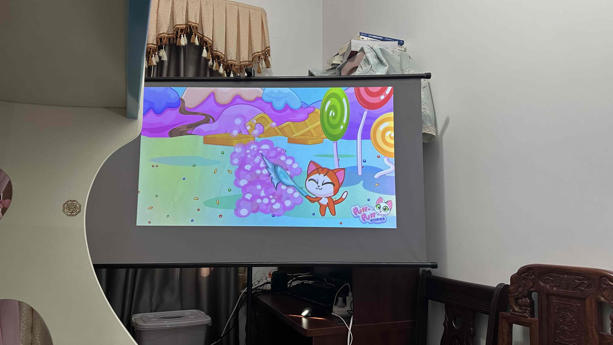
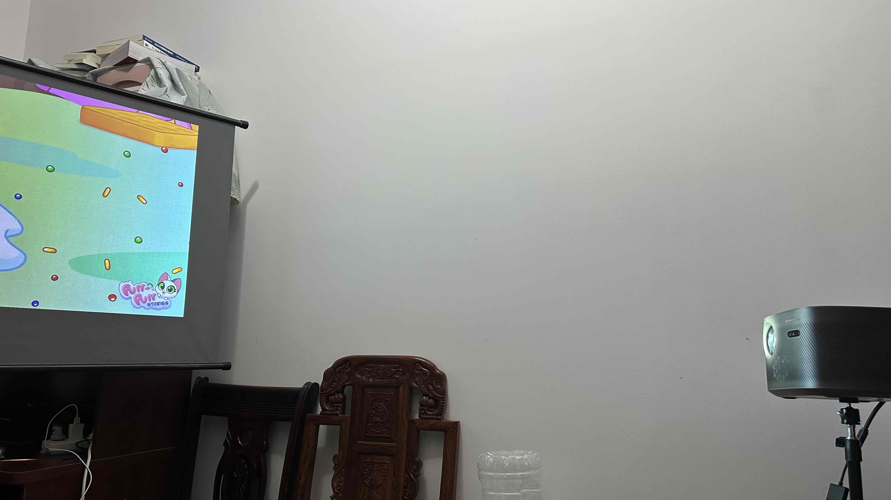
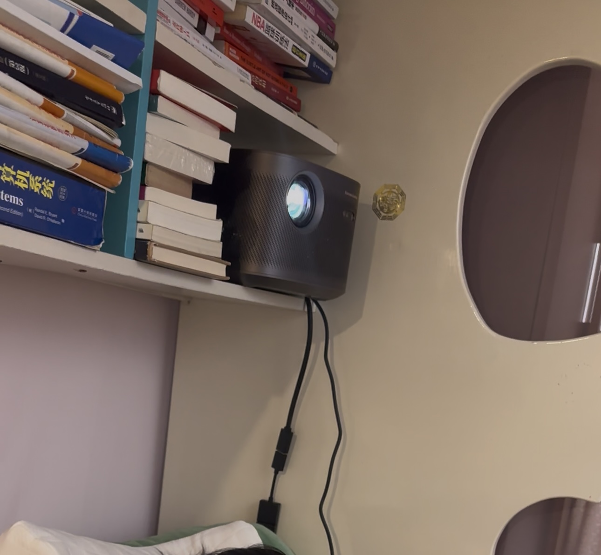

प्रोजेक्टर सेटअप | मूल, AI द्वारा अनुवादित
अगस्त 2024 के अंत में, माता-पिता के साथ वापस रहने के बाद, मैं एक छोटे कमरे में रहने लगा। अपने प्रोजेक्टर द्वारा प्रदान की जाने वाली मनोरंजन की कमी महसूस करते हुए, मैंने इसे अपने पिछले निवास से यहां लाने का फैसला किया।
मैंने अपने प्रोजेक्टर के लिए तीन-कोण वाला प्रोजेक्शन सेटअप खरीदा। मैंने दो मुख्य घटक अलग-अलग खरीदे: एक तीन-कोण वाली छड़ी जिसमें पर्दा लगा हुआ था, और प्रोजेक्टर के लिए अलग से एक तीन-कोण वाला स्टैंड।
प्रोजेक्टर सेट करना सीधा-साधा काम था। मैंने अपने iPhone पर कम्पास ऐप का उपयोग करके यह सुनिश्चित किया कि प्रोजेक्टर पूरी तरह से स्तर पर है।
शुरुआत में, पर्दे वाली प्रोजेक्शन छड़ी का उपयोग करने से पहले, मैंने प्रोजेक्टर को अपने बिस्तर के ऊपर की शेल्फ पर रखा था, जिससे सीधे दीवार पर प्रोजेक्शन होता था।
हालांकि, इस सेटअप में मुझे अपने देखने की स्थिति को लगभग 90 डिग्री घुमाने की आवश्यकता होती थी, जो असुविधाजनक था। इससे बचने के लिए, मैंने पर्दे वाली प्रोजेक्शन छड़ी खरीदी, जिससे मैं बिना अपनी स्थिति बदले एक अधिक उपयुक्त सतह पर प्रोजेक्शन कर सकता था।
 स्रोत: स्वयं कैप्चर किया गया
 स्रोत: स्वयं कैप्चर किया गया
 स्रोत: स्वयं कैप्चर किया गया